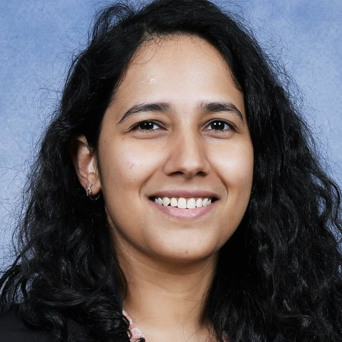
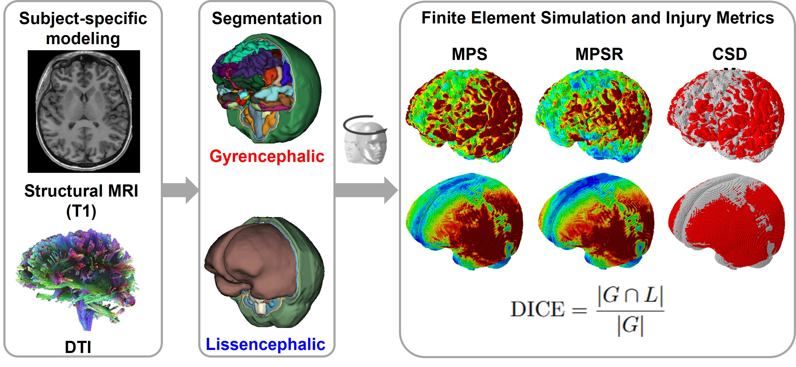
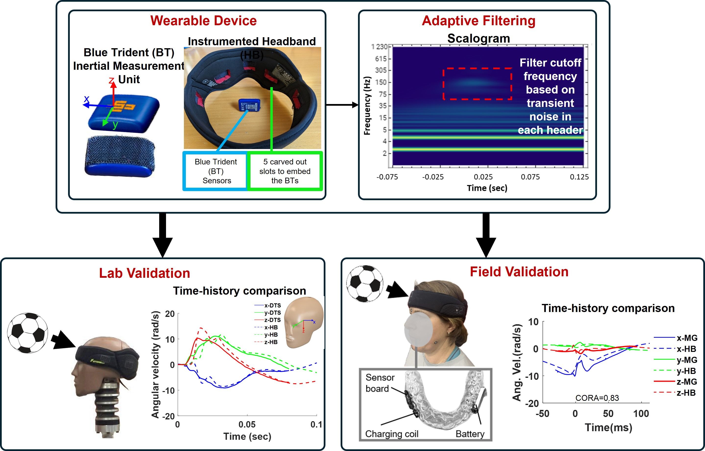
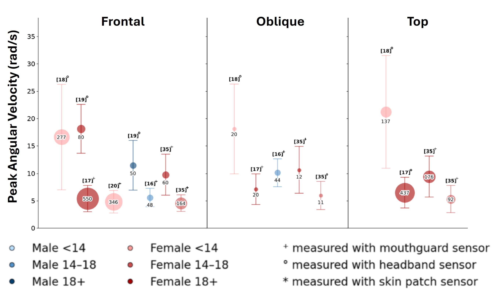
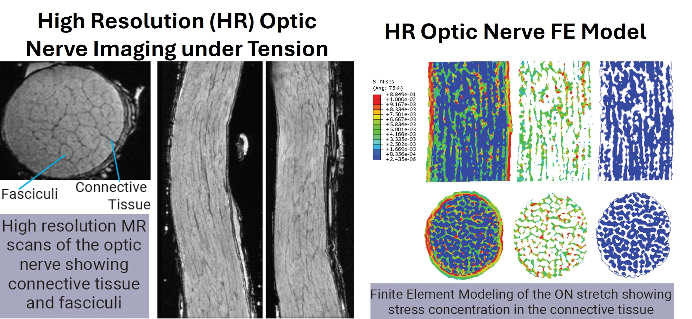
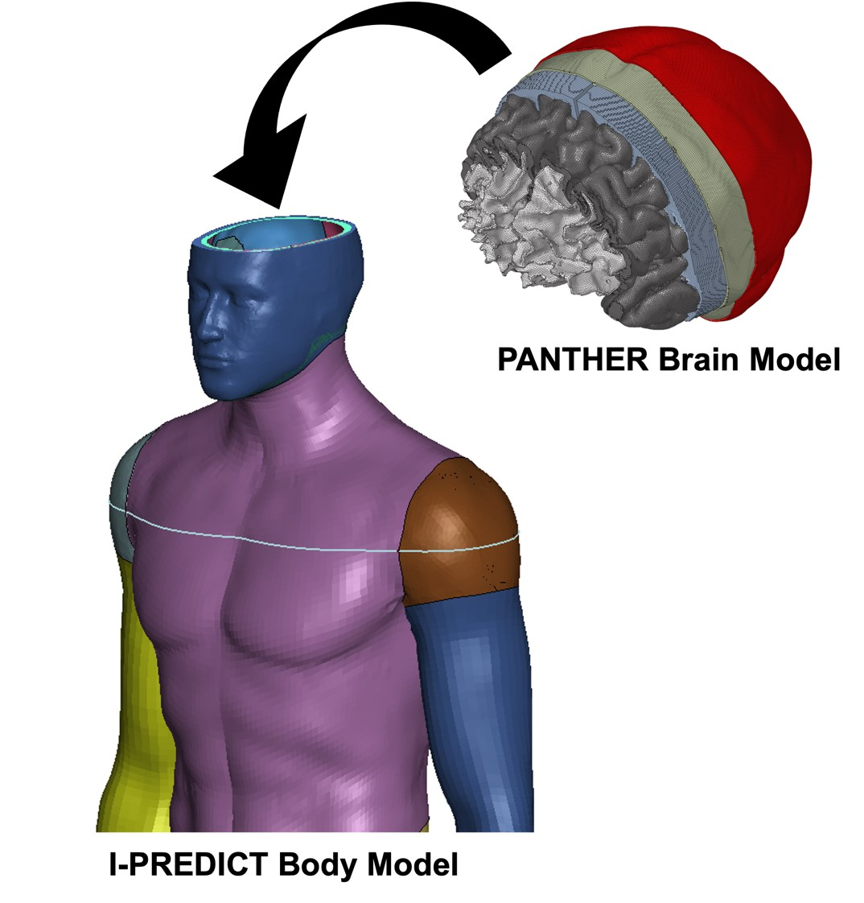
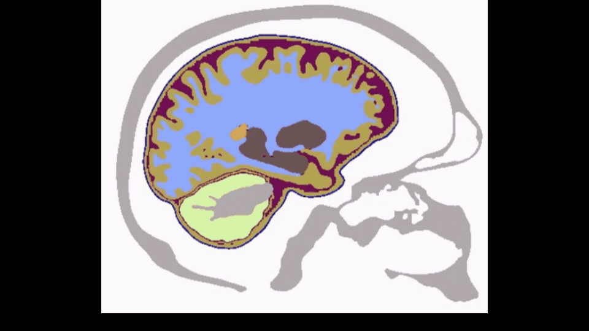
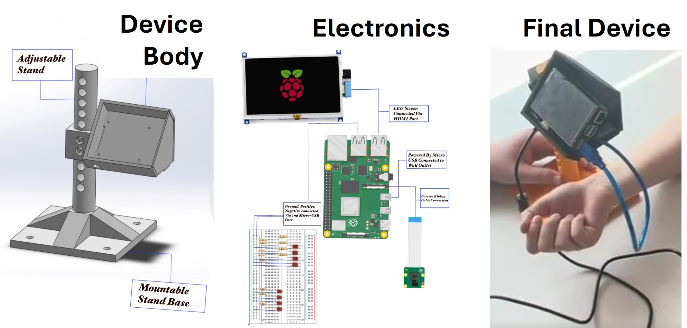

Anu Tripathi, Ph.D.
I am a computational biomechanics researcher. My work sits at the intersection of human motion sensing, medical image-based digital twins, and damage modeling of soft materials, and spans across spatial scales—from whole-body digital twins to micro-resolution models of a single optic nerve.
I develop biofidelic finite element models from medical images, with subject-specific anatomy and material properties, for injury risk assessment under extreme loading conditions. My doctoral research on stress corrosion cracking in polymers provides a strong mathematical foundation in morphology-based constitutive modeling and coupled-physics simulation.
Complementing my computational work, I measure human motion using wearable sensors and novel data processing algorithms, both in laboratory and field. Recently, our team is developing an AI-driven workflow for classifying head impacts in youth soccer. Together, these computational and experimental approaches support my broader goal of developing increasingly biofidelic, sensor-informed human digital twins for injury prediction.
Research Interests
Technical Skills
Recent Projects

Finite Element Head Digital Twins
Built subject-specific finite element head models — with folds (gyrencephalic) and without (lissencephalic) — from structural MRI of 18 youth subjects, to test whether smoothing out the brain's folded anatomy changes predicted injury metrics under rotational head accelerations. Modeling these anatomical details significantly shifted peak strain values and where strain concentrated by changing the skull–brain interface.

Instrumented Headband for Head Kinematics
Developed a wearable headband with commercially available sensors and an adaptive, wavelet-based filtering method to recover accurate head kinematics during soccer headers. Validated in the lab against reference sensors on an instrumented headform, then field-tested on a human subject.

Review and Quantitative Analysis of Head Impacts in Soccer
Numerous studies have estimated head kinematics and brain deformation in soccer to identify mTBI risk conditions. However, heterogeneity in study design, data collection, and analysis has produced inconsistent findings, and injury risk is infrequently reported. We conducted a quantitative analysis of the existing literature to identify knowledge gaps and specific trends. The review underscores the need for standardized reporting of kinematics and brain deformation to enable mTBI risk estimation and meaningful cross-study comparisons.

High Resolution Optic Nerve Modeling
Developed high resolution model of optic nerve using MRI images under under tensile loading, using a 3D-printed, MRI-compatible tension device to reveal stress concentrations at the sub-tissue level.


Human Digital Twin
Developed a novel finite element mesh-morphing workflow — animated at left — to seamlessly graft a subject-specific head model into the skull of a whole-body model, creating an integrated digital twin for injury-risk prediction under military-relevant loading. The morphing pipeline preserves anatomical detail while producing a mesh compatible across both models.
Teaching

Project-Based Teaching: A Vein-Finder Device
As instructor for Introduction to Biomedical Engineering at Robert Morris University, guided undergraduates through a full hardware design cycle — 3D-printed enclosure, circuit design, and camera setup — to build a working near-infrared vein-finder device, from prototype sketches to a final wearable unit.
Work Experience
Undergraduate Mentoring at RMU
- Julianna WinkowskiBiomedical/Medical, Mechatronics, Electrical
- Thandi Pfuma
- Brenda Juan
- Logan ByersManufacturing Quality Engineer at Sun Nuclear
- Victoria KutzmonichGDP-Integrated Supply Chain at Philips HPM
- Jordan Myers
- Isabella RoebuckRMU Engineering Student
- Jazmin Ingram
- Christofer LewisRMU Engineering Student
- Jack JonesClinical Engineer at Trimedx
- Alexis Jones
- Alex FranksRMU Engineering Student
- Alexis Hammond
- Riley LangenfeldRMU Biology Student
- Sofia MianzoBiomedical Engineering Student-Athlete at The University of Rochester
- Erin SeciliaRMU Engineering Student